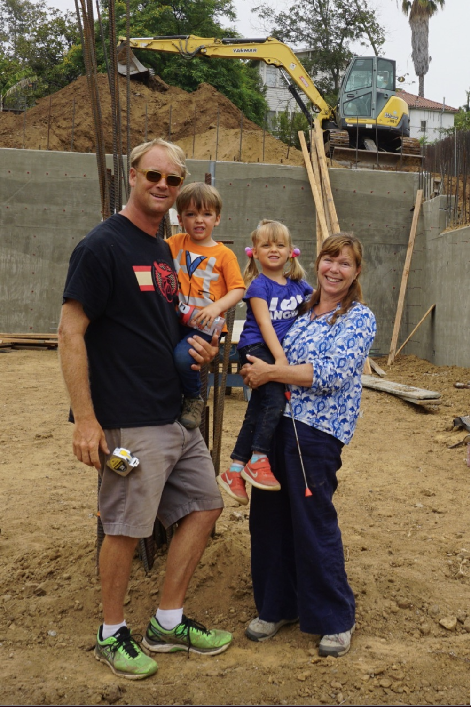
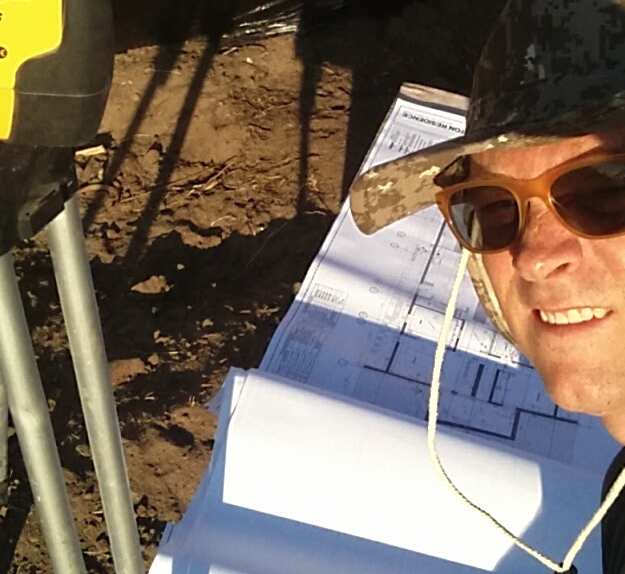
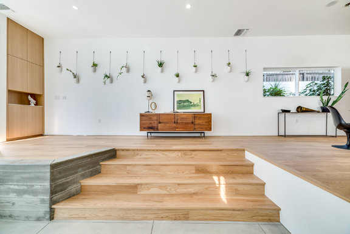
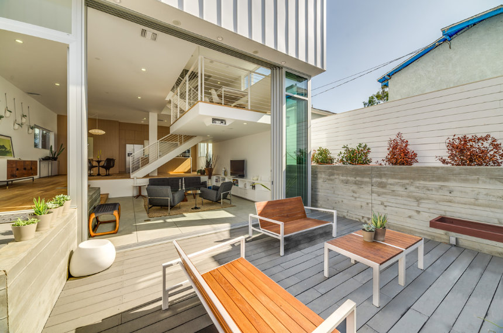
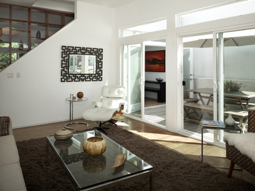

HEYDAY BUILD · ALTADENA, CA
Built to Rebuild
Altadena
From new design to new home, all within your insurance claim,
We have the plan to help our neighbors recover from the devastating fires.
Schedule a Call

THE BLUEPRINT TO REBUILDING
From start
to finish
We’ve pivoted our business as local builders and developed a streamlined plan to help Altadena homeowners rebuild after disaster, ensuring a high-quality new home fully covered by insurance.
From a free consultation to design, permitting, construction, and warranty support, we handle every step—and we make sure it’s all within what your insurance covers.
Rebuild Process
THE HEYDAY STORY
On a mission
for the 91001
After the recent fires in Altadena left so many of our neighbors, friends and family displaced we understood that Heyday is uniquely qualified to help the rebuild effort. We are also acutely aware of the stress and decision fatigue victims are feeling.
That’s why we’ve created a process that takes the burden off our neighbors and leaves it to us, the local professionals.
Our Story
THE HEYDAY BUILD DIFFERENCE
Leave it
to the pros
Most people we talk to in Altadena aren’t sure where to start the rebuild process. Because Heyday Build knows how to navigate through every step of the way, we should be your first call.
Unlike individual architects, designers or general contractors, we cover the entire process, understanding that your insurance payout has to cover your new home. We plan around those constraints to get you an expertly-built home made by local craftspeople.
FAQ
HEYDAY IS LOCAL
25 Years
in Los Angeles
Twenty Five Years of home building in North Los Angeles. Eagle Rock, Highland Park, Silver Lake, Echo Park.
Our subcontractors, tradesmen, materials suppliers, and employees are local. We've been providing warranty service locally for twenty five years.
ExperienceWHAT OUR COMMUNITY IS SAYING
“Whomever has their home built by Heyday Build will have the best outcome in this recovery”
“Wow, if you can build for insurance rates, that is going to help a lot of people”
“Speed matters in the recovery process ... Job No. 1 is to help people rebuild and get back to their new homes”
“Replacing these homes for what insurance is paying is going to take a specialized business plan; we’ve developed that”
We rebuilt our local homebuilding business to rebuild your home for the insurance claim.